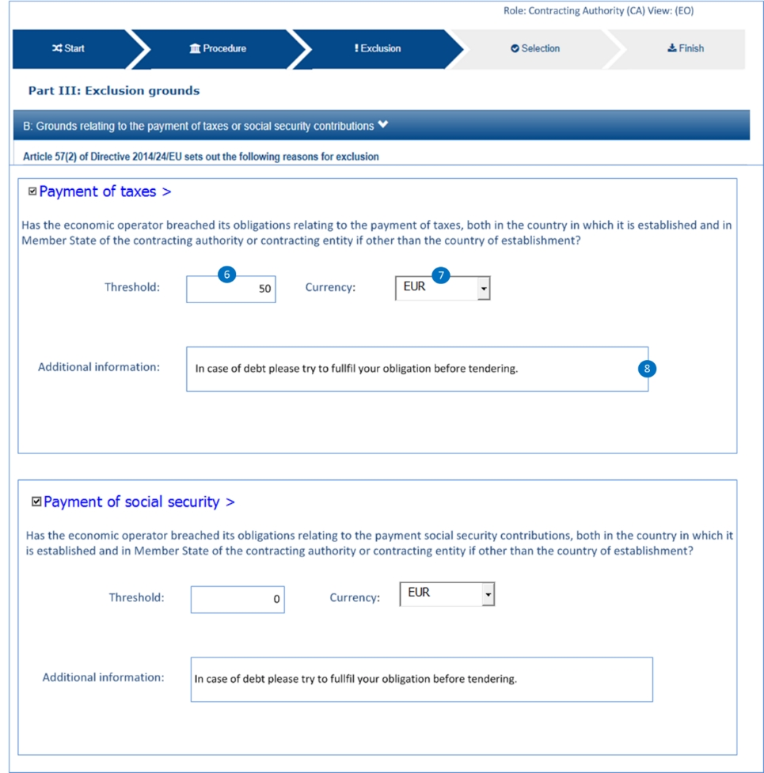

Contributions
Related information requirements
See formal requirements related to exclusion grounds in the BIS 41 - European Single Procurement Document (Version 2.0.0), and more specifically tbr070-009, tbr070-004, tbr070-013.
REQUIREMENT |
The buyer needs to be able to specify national exclusion criteria linked to one EU criterion as well as criteria particular for the procurement procedure. The economic operator, in the ESPD Response document, will have to responde "Yes" or "No" to each national criterion thus confirming that it in breach of the Law. |
See also the REQUIREMENT tbr070-015 about economic thresholds regarding unpaid taxes or social security obligations.
Mock-ups - buyer perspective
This other screen-capture below represents a possible mock-up, from the buyer perspective, for the edition of requirements in 'Contributions' criterion (Payment of Taxes).

Figure 58. 'Payment of Taxes', REQUIREMENT edition (Buyer Perspective)
Mock-ups - economic operator perspective
This other mock-up illustrates what the economic operator sees.
|
Beware that this mock-up is not showing the national criteria. For this mock-up it is presumed that by answering 'Yes' to the general EU criterion all the national criteria QUESTION 'Your answer' will be also set to 'Yes'. |

Figure 59. 'Payment of Taxes', (EO perspective)

XML Example
Payment of Taxes (PoT)
<!... header elements removed for brevity -->
<!-- Criterion:Payment of taxes -->
<cac:TenderingCriterion>
<cbc:ID schemeID="criterion" schemeAgencyID="OP" schemeVersionID="3.2.0">b61bbeb7-690e-4a40-bc68-d6d4ecfaa3d4</cbc:ID>
<cbc:CriterionTypeCode listID="http://publications.europa.eu/resource/authority/criterion" listAgencyID="OP" listVersionID="20210616-0">tax-pay</cbc:CriterionTypeCode>
<cbc:Name>Payment of taxes</cbc:Name>
<cbc:Description>Has the economic operator breached its obligations relating to the payment of taxes, both in the country in which it is established and in Member State of the contracting authority or contracting entity if other than the country of establishment?</cbc:Description>
<cac:SubTenderingCriterion>
<cbc:ID schemeID="criterion" schemeAgencyID="OP" schemeVersionID="3.2.0">e6b21867-95b5-4549-8180-f4673219b179</cbc:ID>
<cbc:Name>[Name of the National Criterion]</cbc:Name>
<cbc:Description>[Description of the National Criterion ]</cbc:Description>
<cac:TenderingCriterionPropertyGroup>
<cbc:ID schemeID="criterion" schemeAgencyID="OP" schemeVersionID="3.2.0">8c39b505-8abe-44fa-a3e0-f2d78b9d8224</cbc:ID>
<cbc:PropertyGroupTypeCode listID="property-group-type" listAgencyID="OP" listVersionID="3.2.0">ON*</cbc:PropertyGroupTypeCode>
<cac:TenderingCriterionProperty>
<cbc:ID schemeID="criterion" schemeAgencyID="OP" schemeVersionID="3.2.0">61f8dd3d-5ec6-4718-be92-4e58df6d0343</cbc:ID>
<cbc:Description>[Additional information; e.g. no evidences online]</cbc:Description>
<cbc:TypeCode listID="criterion-element-type" listAgencyID="OP" listVersionID="3.2.0">CAPTION</cbc:TypeCode>
<cbc:ValueDataTypeCode listID="response-data-type" listAgencyID="OP" listVersionID="3.2.0">NONE</cbc:ValueDataTypeCode>
</cac:TenderingCriterionProperty>
<cac:TenderingCriterionProperty>
<cbc:ID schemeID="criterion" schemeAgencyID="OP" schemeVersionID="3.2.0">364f5ed8-2861-4eb3-bffc-b81732325ea8</cbc:ID>
<cbc:Description>Your Answer</cbc:Description>
<cbc:TypeCode listID="criterion-element-type" listAgencyID="OP" listVersionID="3.2.0">QUESTION</cbc:TypeCode>
<cbc:ValueDataTypeCode listID="response-data-type" listAgencyID="OP" listVersionID="3.2.0">INDICATOR</cbc:ValueDataTypeCode>
</cac:TenderingCriterionProperty>
</cac:TenderingCriterionPropertyGroup>
</cac:SubTenderingCriterion>
<cac:Legislation>
<cbc:ID schemeID="criterion" schemeAgencyID="OP" schemeVersionID="3.2.0">cf127b09-2ca6-4365-bade-e8c90b8e8528</cbc:ID>
<cbc:Title>[Legislation title]</cbc:Title>
<cbc:Description>[Legislation description]</cbc:Description>
<cbc:JurisdictionLevel>EU</cbc:JurisdictionLevel>
<cbc:Article>[Article, e.g. Article 2.I.a]</cbc:Article>
<cbc:URI>http://eur-lex.europa.eu/</cbc:URI>
<cac:Language>
<cbc:LocaleCode listID="http://publications.europa.eu/resource/authority/language" listAgencyName="OP" listVersionID="20211208-0">ENG</cbc:LocaleCode>
</cac:Language>
</cac:Legislation>
<cac:TenderingCriterionPropertyGroup>
<cbc:ID schemeID="criterion" schemeAgencyID="OP" schemeVersionID="3.2.0">53c9aad8-dc80-48f8-85d9-755c2aab8e95</cbc:ID>
<cbc:PropertyGroupTypeCode listID="property-group-type" listAgencyID="OP" listVersionID="3.2.0">ON*</cbc:PropertyGroupTypeCode>
<cac:TenderingCriterionProperty>
<cbc:ID schemeID="criterion" schemeAgencyID="OP" schemeVersionID="3.2.0">610f01af-b5c6-486b-9b5e-8ea35c80beeb</cbc:ID>
<cbc:Description>Threshold</cbc:Description>
<cbc:TypeCode listID="criterion-element-type" listAgencyID="OP" listVersionID="3.2.0">REQUIREMENT</cbc:TypeCode>
<cbc:ValueDataTypeCode listID="response-data-type" listAgencyID="OP" listVersionID="3.2.0">AMOUNT</cbc:ValueDataTypeCode>
<!-- No answer is expected here from the economic operator, as this is a REQUIREMENT issued by the buyer. Hence the element'cbc:ValueDataTypeCode' contains the type of value of the requirement issued by the buyer -->
<cbc:ExpectedAmount currencyID="EUR">500000</cbc:ExpectedAmount>
</cac:TenderingCriterionProperty>
<cac:TenderingCriterionProperty>
<cbc:ID schemeID="criterion" schemeAgencyID="OP" schemeVersionID="3.2.0">f89b64e0-db7e-4ec9-9657-17755521b7ab</cbc:ID>
<cbc:Description>Additional Information</cbc:Description>
<cbc:TypeCode listID="criterion-element-type" listAgencyID="OP" listVersionID="3.2.0">REQUIREMENT</cbc:TypeCode>
<cbc:ValueDataTypeCode listID="response-data-type" listAgencyID="OP" listVersionID="3.2.0">DESCRIPTION</cbc:ValueDataTypeCode>
<!-- No answer is expected here from the economic operator, as this is a REQUIREMENT issued by the buyer. Hence the element'cbc:ValueDataTypeCode' contains the type of value of the requirement issued by the buyer -->
<cbc:ExpectedDescription>[Additional information provided by the CA]</cbc:ExpectedDescription>
</cac:TenderingCriterionProperty>
<cac:SubsidiaryTenderingCriterionPropertyGroup>
<cbc:ID schemeID="criterion" schemeAgencyID="OP" schemeVersionID="3.2.0">098fd3cc-466e-4233-af1a-affe09471bce</cbc:ID>
<cbc:PropertyGroupTypeCode listID="property-group-type" listAgencyID="OP" listVersionID="3.2.0">ON*</cbc:PropertyGroupTypeCode>
<cac:TenderingCriterionProperty>
<cbc:ID schemeID="criterion" schemeAgencyID="OP" schemeVersionID="3.2.0">e51f555a-48ec-4f06-853c-a162dce98668</cbc:ID>
<cbc:Description>Your answer</cbc:Description>
<cbc:TypeCode listID="criterion-element-type" listAgencyID="OP" listVersionID="3.2.0">QUESTION</cbc:TypeCode>
<cbc:ValueDataTypeCode listID="response-data-type" listAgencyID="OP" listVersionID="3.2.0">INDICATOR</cbc:ValueDataTypeCode>
</cac:TenderingCriterionProperty>
<cac:SubsidiaryTenderingCriterionPropertyGroup>
<cbc:ID schemeID="criterion" schemeAgencyID="OP" schemeVersionID="3.2.0">f8499787-f9f8-4355-95e2-9784426f4d7b</cbc:ID>
<cbc:PropertyGroupTypeCode listID="property-group-type" listAgencyID="OP" listVersionID="3.2.0">ONTRUE</cbc:PropertyGroupTypeCode>
<cac:TenderingCriterionProperty>
<cbc:ID schemeID="criterion" schemeAgencyID="OP" schemeVersionID="3.2.0">280e5b46-66b3-40c4-bb7a-0dcbbbea519b</cbc:ID>
<cbc:Description>Country or member state concerned</cbc:Description>
<cbc:TypeCode listID="criterion-element-type" listAgencyID="OP" listVersionID="3.2.0">QUESTION</cbc:TypeCode>
<cbc:ValueDataTypeCode listID="response-data-type" listAgencyID="OP" listVersionID="3.2.0">CODE_COUNTRY</cbc:ValueDataTypeCode>
</cac:TenderingCriterionProperty>
<cac:TenderingCriterionProperty>
<cbc:ID schemeID="criterion" schemeAgencyID="OP" schemeVersionID="3.2.0">cd469ace-ae87-4203-b182-10186f8d7d8b</cbc:ID>
<cbc:Description>Amount concerned</cbc:Description>
<cbc:TypeCode listID="criterion-element-type" listAgencyID="OP" listVersionID="3.2.0">QUESTION</cbc:TypeCode>
<cbc:ValueDataTypeCode listID="response-data-type" listAgencyID="OP" listVersionID="3.2.0">AMOUNT</cbc:ValueDataTypeCode>
</cac:TenderingCriterionProperty>
<cac:SubsidiaryTenderingCriterionPropertyGroup>
<cbc:ID schemeID="criterion" schemeAgencyID="OP" schemeVersionID="3.2.0">7c2aec9f-4876-4c33-89e6-2ab6d6cf5d02</cbc:ID>
<cbc:PropertyGroupTypeCode listID="property-group-type" listAgencyID="OP" listVersionID="3.2.0">ON*</cbc:PropertyGroupTypeCode>
<cac:TenderingCriterionProperty>
<cbc:ID schemeID="criterion" schemeAgencyID="OP" schemeVersionID="3.2.0">08a4c9e3-5d00-4058-977d-27886783ab75</cbc:ID>
<cbc:Description>Has this breach of obligations been established by means other than a judicial or administrative decision?</cbc:Description>
<cbc:TypeCode listID="criterion-element-type" listAgencyID="OP" listVersionID="3.2.0">QUESTION</cbc:TypeCode>
<cbc:ValueDataTypeCode listID="response-data-type" listAgencyID="OP" listVersionID="3.2.0">INDICATOR</cbc:ValueDataTypeCode>
</cac:TenderingCriterionProperty>
<cac:SubsidiaryTenderingCriterionPropertyGroup>
<cbc:ID schemeID="criterion" schemeAgencyID="OP" schemeVersionID="3.2.0">3cb7abf1-662a-4756-b61c-7bc716c1fafc</cbc:ID>
<cbc:PropertyGroupTypeCode listID="property-group-type" listAgencyID="OP" listVersionID="3.2.0">ONTRUE</cbc:PropertyGroupTypeCode>
<cac:TenderingCriterionProperty>
<cbc:ID schemeID="criterion" schemeAgencyID="OP" schemeVersionID="3.2.0">e03fdd7b-ab5b-4413-9d4c-1841bff6ac4d</cbc:ID>
<cbc:Description>Please describe which means were used</cbc:Description>
<cbc:TypeCode listID="criterion-element-type" listAgencyID="OP" listVersionID="3.2.0">QUESTION</cbc:TypeCode>
<cbc:ValueDataTypeCode listID="response-data-type" listAgencyID="OP" listVersionID="3.2.0">DESCRIPTION</cbc:ValueDataTypeCode>
</cac:TenderingCriterionProperty>
</cac:SubsidiaryTenderingCriterionPropertyGroup>
<cac:SubsidiaryTenderingCriterionPropertyGroup>
<cbc:ID schemeID="criterion" schemeAgencyID="OP" schemeVersionID="3.2.0">fc57e473-d63e-4a04-b589-dcf81cab8052</cbc:ID>
<cbc:PropertyGroupTypeCode listID="property-group-type" listAgencyID="OP" listVersionID="3.2.0">ON*</cbc:PropertyGroupTypeCode>
<cac:TenderingCriterionProperty>
<cbc:ID schemeID="criterion" schemeAgencyID="OP" schemeVersionID="3.2.0">f6402f3e-3e4f-482f-abc3-d754815809cc</cbc:ID>
<cbc:Description>Has the economic operator fulfilled its obligations by paying or entering into a binding arrangement with a view to paying the taxes contributions due, including, where applicable, any interest accrued or fines?</cbc:Description>
<cbc:TypeCode listID="criterion-element-type" listAgencyID="OP" listVersionID="3.2.0">QUESTION</cbc:TypeCode>
<cbc:ValueDataTypeCode listID="response-data-type" listAgencyID="OP" listVersionID="3.2.0">INDICATOR</cbc:ValueDataTypeCode>
</cac:TenderingCriterionProperty>
<cac:SubsidiaryTenderingCriterionPropertyGroup>
<cbc:ID schemeID="criterion" schemeAgencyID="OP" schemeVersionID="3.2.0">6c3609e1-9add-4fa9-9409-62ce72ae4548</cbc:ID>
<cbc:PropertyGroupTypeCode listID="property-group-type" listAgencyID="OP" listVersionID="3.2.0">ONTRUE</cbc:PropertyGroupTypeCode>
<cac:TenderingCriterionProperty>
<cbc:ID schemeID="criterion" schemeAgencyID="OP" schemeVersionID="3.2.0">04b9b95c-13f4-4fd1-993f-5e0b3a766cdb</cbc:ID>
<cbc:Description>Please describe them</cbc:Description>
<cbc:TypeCode listID="criterion-element-type" listAgencyID="OP" listVersionID="3.2.0">QUESTION</cbc:TypeCode>
<cbc:ValueDataTypeCode listID="response-data-type" listAgencyID="OP" listVersionID="3.2.0">DESCRIPTION</cbc:ValueDataTypeCode>
</cac:TenderingCriterionProperty>
</cac:SubsidiaryTenderingCriterionPropertyGroup>
</cac:SubsidiaryTenderingCriterionPropertyGroup>
<cac:SubsidiaryTenderingCriterionPropertyGroup>
<cbc:ID schemeID="criterion" schemeAgencyID="OP" schemeVersionID="3.2.0">c882afa4-6971-4b00-8970-0c283eb122cc</cbc:ID>
<cbc:PropertyGroupTypeCode listID="property-group-type" listAgencyID="OP" listVersionID="3.2.0">ONFALSE</cbc:PropertyGroupTypeCode>
<cac:TenderingCriterionProperty>
<cbc:ID schemeID="criterion" schemeAgencyID="OP" schemeVersionID="3.2.0">d2e558b1-53b0-42d6-bd8b-52ca95f86b1e</cbc:ID>
<cbc:Description>If this breach of obligations was established through a judicial or administrative decision, was this decision final and binding?</cbc:Description>
<cbc:TypeCode listID="criterion-element-type" listAgencyID="OP" listVersionID="3.2.0">QUESTION</cbc:TypeCode>
<cbc:ValueDataTypeCode listID="response-data-type" listAgencyID="OP" listVersionID="3.2.0">INDICATOR</cbc:ValueDataTypeCode>
</cac:TenderingCriterionProperty>
<cac:SubsidiaryTenderingCriterionPropertyGroup>
<cbc:ID schemeID="criterion" schemeAgencyID="OP" schemeVersionID="3.2.0">815422d6-f8a1-418a-8bf0-3524f7c8f721</cbc:ID>
<cbc:PropertyGroupTypeCode listID="property-group-type" listAgencyID="OP" listVersionID="3.2.0">ONTRUE</cbc:PropertyGroupTypeCode>
<cac:TenderingCriterionProperty>
<cbc:ID schemeID="criterion" schemeAgencyID="OP" schemeVersionID="3.2.0">228aa0c1-43a1-4c52-a8a6-587df8838d75</cbc:ID>
<cbc:Description>Please indicate the date of conviction or decision</cbc:Description>
<cbc:TypeCode listID="criterion-element-type" listAgencyID="OP" listVersionID="3.2.0">QUESTION</cbc:TypeCode>
<cbc:ValueDataTypeCode listID="response-data-type" listAgencyID="OP" listVersionID="3.2.0">DATE</cbc:ValueDataTypeCode>
</cac:TenderingCriterionProperty>
<cac:TenderingCriterionProperty>
<cbc:ID schemeID="criterion" schemeAgencyID="OP" schemeVersionID="3.2.0">fd161583-cd57-4033-b387-60c76f878c26</cbc:ID>
<cbc:Description>In case of a conviction insofar as established directly therein, the length of the period of exclusion</cbc:Description>
<cbc:TypeCode listID="criterion-element-type" listAgencyID="OP" listVersionID="3.2.0">QUESTION</cbc:TypeCode>
<cbc:ValueDataTypeCode listID="response-data-type" listAgencyID="OP" listVersionID="3.2.0">PERIOD</cbc:ValueDataTypeCode>
</cac:TenderingCriterionProperty>
</cac:SubsidiaryTenderingCriterionPropertyGroup>
</cac:SubsidiaryTenderingCriterionPropertyGroup>
</cac:SubsidiaryTenderingCriterionPropertyGroup>
</cac:SubsidiaryTenderingCriterionPropertyGroup>
</cac:SubsidiaryTenderingCriterionPropertyGroup>
<cac:SubsidiaryTenderingCriterionPropertyGroup>
<cbc:ID schemeID="criterion" schemeAgencyID="OP" schemeVersionID="3.2.0">7458d42a-e581-4640-9283-34ceb3ad4345</cbc:ID>
<cbc:PropertyGroupTypeCode listID="property-group-type" listAgencyID="OP" listVersionID="3.2.0">ON*</cbc:PropertyGroupTypeCode>
<cac:TenderingCriterionProperty>
<cbc:ID schemeID="criterion" schemeAgencyID="OP" schemeVersionID="3.2.0">f99c2b68-bd5e-4cf8-b51a-ed906defe9e9</cbc:ID>
<cbc:Description>Is this information available electronically?</cbc:Description>
<cbc:TypeCode listID="criterion-element-type" listAgencyID="OP" listVersionID="3.2.0">QUESTION</cbc:TypeCode>
<cbc:ValueDataTypeCode listID="response-data-type" listAgencyID="OP" listVersionID="3.2.0">INDICATOR</cbc:ValueDataTypeCode>
</cac:TenderingCriterionProperty>
<cac:SubsidiaryTenderingCriterionPropertyGroup>
<cbc:ID schemeID="criterion" schemeAgencyID="OP" schemeVersionID="3.2.0">41dd2e9b-1bfd-44c7-93ee-56bd74a4334b</cbc:ID>
<cbc:PropertyGroupTypeCode listID="property-group-type" listAgencyID="OP" listVersionID="3.2.0">ONTRUE</cbc:PropertyGroupTypeCode>
<cac:TenderingCriterionProperty>
<cbc:ID schemeID="criterion" schemeAgencyID="OP" schemeVersionID="3.2.0">d13ad29a-f24a-4e01-b716-7f61006d083f</cbc:ID>
<cbc:Description>Evidence Supplied</cbc:Description>
<cbc:TypeCode listID="criterion-element-type" listAgencyID="OP" listVersionID="3.2.0">QUESTION</cbc:TypeCode>
<cbc:ValueDataTypeCode listID="response-data-type" listAgencyID="OP" listVersionID="3.2.0">EVIDENCE_IDENTIFIER</cbc:ValueDataTypeCode>
</cac:TenderingCriterionProperty>
</cac:SubsidiaryTenderingCriterionPropertyGroup>
</cac:SubsidiaryTenderingCriterionPropertyGroup>
</cac:TenderingCriterionPropertyGroup>
</cac:TenderingCriterion>-
The MS defined this national 'Payment of Taxes' criterion in e-Certis.
-
Reference to the EU Legislation. This reusable structure is identical for all the exclusion criteria.
-
For this ESPD Request Payment of Taxes criterion, the Member State defined in e-Certis a national REQUIREMENT consisting in the specification of the 'threshold amount of debt that an economic operator have with the national Tax Agency' (50 Euros in this example).
-
Notice that type of property used is REQUIREMENT. This entails that: a cbc:ValueDataType will be present indicating the type of value the buyer uses for this REQUIREMENT (e.g. AMOUNT, INDICATOR, DESCRIPTION, etc.; see the Code List ResponseDataType, the values are the same for buyers REQUIREMENT(s) than for economic operator response values).
-
Beware that No answer is expected here from the economic operator (do not get confused by the presence of the cbc:ValueDataType, as said it is used by both the Buyer and the EO.
-
The value supplied by the buyer for this requirement (50 Euros, in this example). Notice that the currency is specified in the attibute currencyID of the cbc:Amount component.
-
The MS also allows the buyer the possibility of adding multiple additional textual requirements (in this case the Buyer uses this to explain that ''Beware that the national Tax Agency won’t permit the existence of a debt, even if minimial, for two consecutive years'').
-
Again, no answer is expected here from the economic operator, as this is a REQUIREMENT issued by the buyer. Hence the element 'cbc:ValueDataTypeCode' contains the type of value of the requirement issued by the buyer.